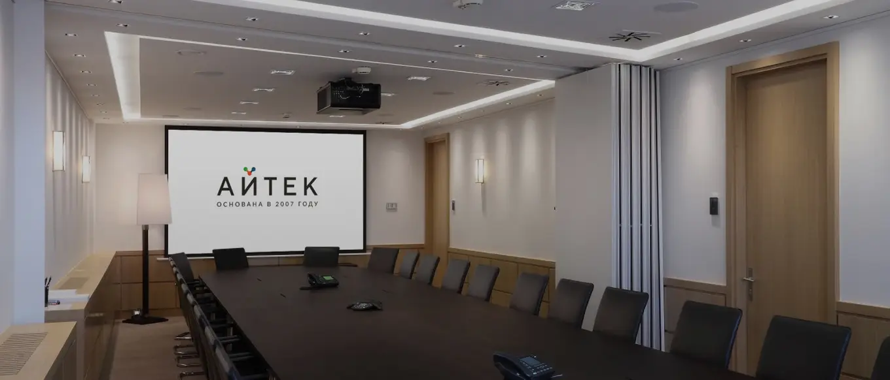

Сеть гостиничных комплексов Art Family
Москва · 20 рабочих дней
Комплексное оснащение переговорной комнаты в городе Москва

Стоимость и срок указаны для этого объекта. Смета нового проекта зависит от помещения, комплектации и состава работ.
Создание аудиовизуального комплекса, предназначенного для проведения переговоров. Комплекс оборудования должен обеспечить возможность отображения презентационных материалов c звуковым сопровождением. Управление всем оборудованием должно осуществляться с единого устройства. Большие открытые окна требовали нестандартного оформления. Всё интерфейсное подключение должно осуществляться из скрытых настольных люков, максимально сочетающихся с дизайном помещения. Необходима организация стабильного беспроводного подключения источников сигнала к отображающим устройствам.
Специалистами ГК Айтек был успешно завершён проект по комплексному оснащению объекта современным мультимедийным оборудованием под ключ. В ходе реализации проекта был произведён весь спектр работ — от поставки оборудования и разработки проектной документации до финальной отладки систем. Состав реализованного комплекса: Проектор с мощностью светового потока 5000 люмен Проекционный моторизированный экран 1,32 х 2,34м Звуковые врезные потолочные системы Камера захвата с умным наведением на активного спикера Моторизованные шторы затемнения Система совместной работы BOYD Скрытая многоуровневая коммутация Централизованное управление всем оборудованием с единого пульта
ГК Айтек приняла участие в создании аудиовизуального комплекса в переговорной комнате для компании TEXTRON. Целью данного проекта было создание универсального мультимедийного пространства для проведения деловых встреч, переговоров и презентаций. Вся работа началась ещё задолго до начала строительно-отделочных работ. Данное помещение представляло собой относительно небольшое пространство прямоугольной формы площадью 30 кв. м. Правильная форма помещения определила стандартное расположение мебели и оборудования: стол в центре помещения и наличие большого экрана на стене с самым большим углом просмотра. Исходя из требований заказчика, в качестве системы отображения было принято использовать связку проекционный экран и проектор. Место расположение экрана определили форма помещения и место расположение входной двери. Размер изображения определили стандарты для переговорных комнат, при которых нижняя часть экрана не должна опускаться ниже 120 см от пола, чтобы спинки кресел и головы участников встреч не создавали теней на полости изображения. Дизайн помещения и требования заказчика предполагали максимально незаметное расположение оборудования в интерьере. Поэтому в качестве проекционного экрана и акустических систем было принято использовать системы, предназначенные для скрытого монтажа. В силу ограниченного бюджета, проектор разместили стационарно на потолке с помощью специализированного крепления. Для удобства управления всем комплексом оборудования было принято использовать систему интегрированного управления, с помощью которой можно управлять фактически всеми возможностями оборудования, а именно, включение/выключение проектора, поднятие и опуск экрана, включение и выключение света, переключение входных интерфейсов проектора и многое другое. Все управление осуществляется с помощью одного планшета, а в качестве альтернативного источника управления - настенная панель.
Помещение переговорной комнаты превратилось в многофункциональное пространство, в котором теперь можно проводить не только привычные для нас встречи с партнёрами, но и любые мероприятия в интерактивном формате. Большой экран, качественное звуковое сопровождение, лёгкая управляемость оборудованием, различные заранее подготовленные сценарии - теперь выведут любые переговоры или же просто презентации на высший уровень. Срок реализации данного проекта составил 1 неделю .
Проектор Infocus SP8602 с поддержкой разрешения Full Hd и световым потоком 5000 люмен полностью удовлетворял требования заказчика и существующие стандарты для переговорных комнат. Качество изображения проектора отличается глубокими оттенками чёрного цвета и отличной цветопередачей, световой поток проектора позволяет проецировать изображение даже при искусственном освещении, а стильный дизайн корпуса замечательно вписался в интерьер помещения.
Проекционный экран Projecta Descender Electrol отличается простотой в установке и гибкостью при регулировки. Основной особенностью данного экрана является наличие специализированного эксклюзивного полотна, предназначенного для проецирование изображения с высоким разрешением.
Основным предпочтением при выборе звукового оборудования являлась его максимальная незаметность в интерьере, поэтому, совместно с заказчиком, было принято решение оборудовать переговорную комнату встраиваемыми АС. Акустические системы Apart CM20DT серии DESIGN отличаются отсутствием декоративной рамки/обода вокруг гриля, широким диапазоном воспроизводимых частот и возможностью работы в режиме 100В. Центром комплекса звукоусиления стал многофункциональный ресивер-усилитель Onkyo TX NR-709. Отличительной особенностью данного ресивера является возможность использования широкого набора функциональных возможностей в одной коробке. Данный ресивер сочетает в себе сразу множество устройств, таких как: микшер, усилитель, источник сигнала и сетевое хранилище в ценовом диапазоне до 700 $. С учётом количества времени, проводимого при переговорах, устройство бытового класса идеально подходит для решения поставленных задач.
Переговорная комната оборудована системой беспроводной связи от компании Barco с возможностью совместной работы. Данная система работает по принципу “принеси свое устройство с собой” (от англ. BYOD). Эта система позволяет подключить ноутбук, компьютер или мобильное устройство по USB интерфейсу и поддерживает операционные системы Win, Mac OS, android и IOS. Режим совместной работы позволяет подключиться одновременно нескольким участникам переговоров и совместно редактировать фоновый документ. Отличительной особенностью данной системы является высокая отказоустойчивость и стабильность. Система Barco Click Share работает в динамических диапазонах частот 2,4 и 5 Ггц и в зависимости от нагрузки на каждую из диапазонов автоматически переключается на наименее загруженную.
Система интегрированного управления CUE является надёжным и бесперебойным центром управления всем комплексом оборудования. Данная система позволяет управлять всем составом оборудования с помощью единого устройства/пульта и нажатием одной кнопки, например, включение/выключение оборудования, возможность выбора видеовходов, опуск проекционного экрана, регулировка громкостью системы звукоусиления и многое другое.. Ядром системы является центральный контроллер, который осуществляет взаимодействие всех устройств между собой. Индивидуально разработанное ПО позволяет на графической мнемосхеме активировать готовые логические сценарии работы оборудования.
В качестве коммутационных соединительных элементов использовались кабели от израильской компании Kramer. Компания Kramer Electronics основана в 1981 году. Основной деятельностью компании является производство и продажа оборудования, предназначенного для передачи и обработки аудио и видео сигналов. Компания хорошо известна на мировом рынке и зарекомендовала себя как ведущий производитель коммутационного оборудования.
В качестве крепёжных элементов были использованы крепления для АВ оборудования от компании Wize. Компания Wize создана в 2007 году. Отличительной особенностью данной продукции является высокая надёжность крепёжных элементов, нагрузка которых просчитывается с четырёхкратным запасом и конкурентной ценой.
В бриф перейдут выбранный проект, тип помещения и бюджет примера. Все параметры можно изменить.